#78 KD Singh Babu Stadium · Lucknow (1 Tests)
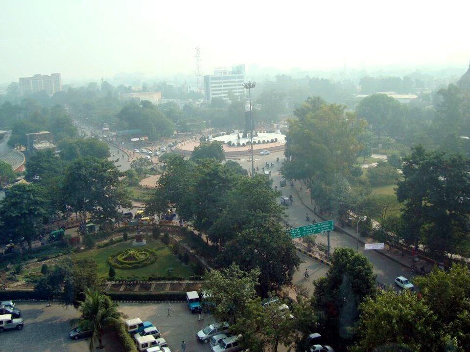
0: Public domain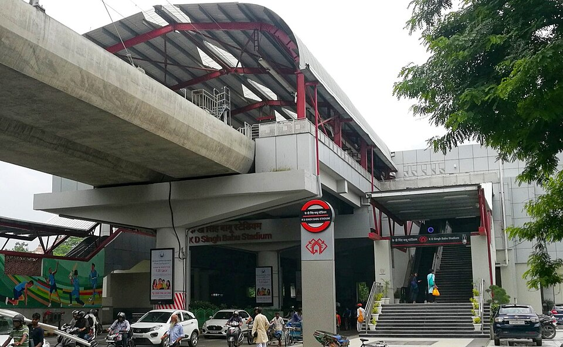
1: CC BY-SA 4.0#79 R Premadasa Stadium · Colombo (1 Tests)
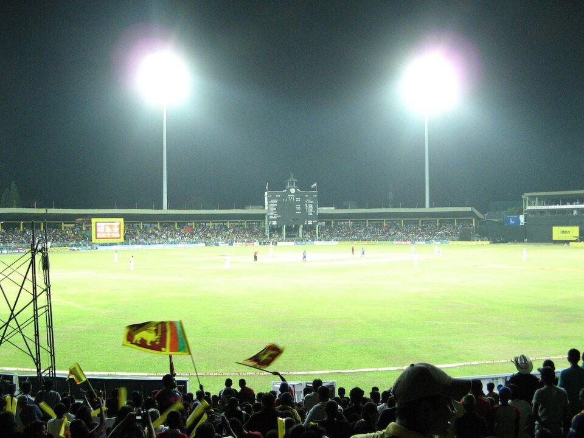
0: CC BY-SA 2.0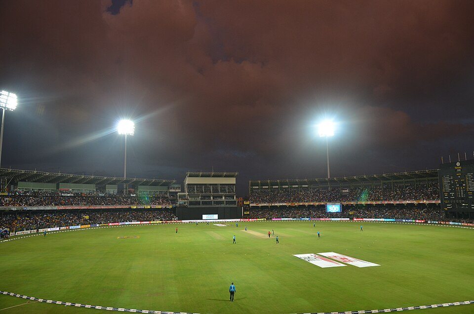
1: CC BY 2.0#80 Goodyear Park · Bloemfontein (1 Tests)
no candidates
#81 Multan Cricket Stadium · Multan (1 Tests)
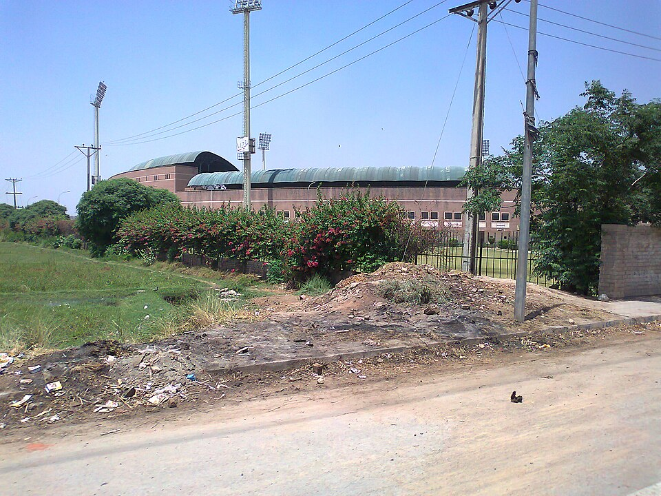
0: CC BY 3.0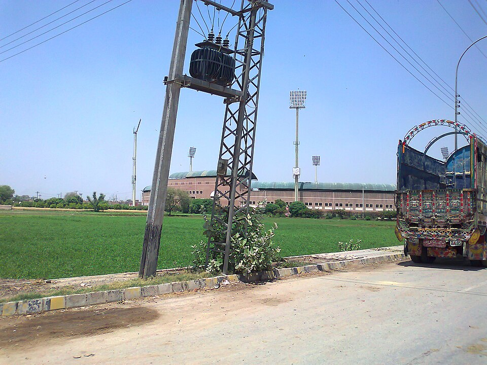
1: CC BY 3.0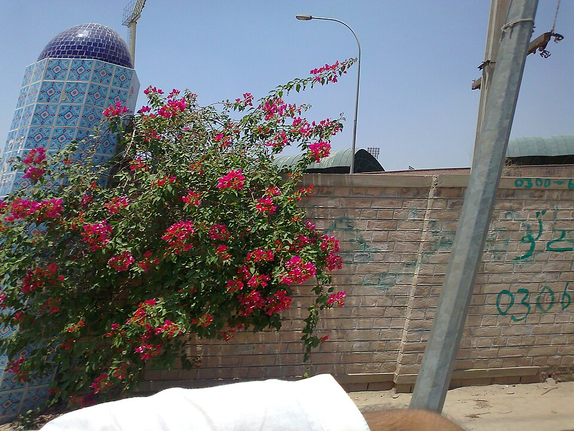
2: CC BY 3.0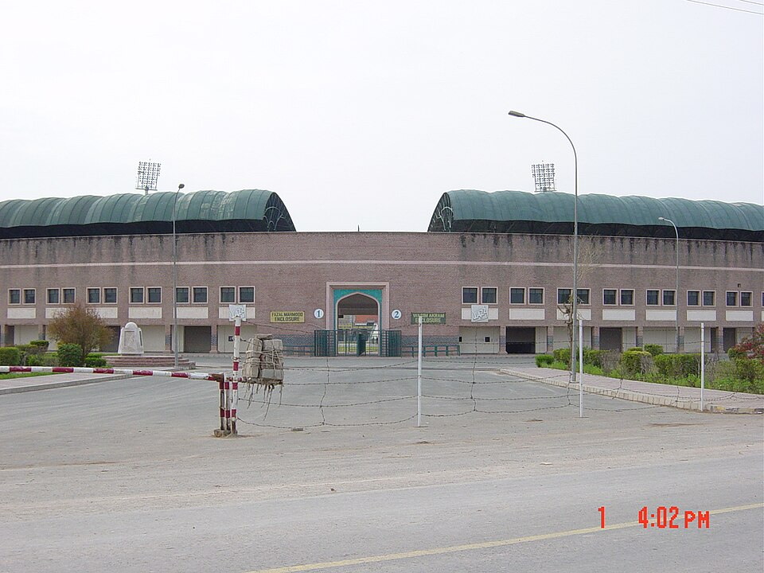
3: CC BY-SA 3.0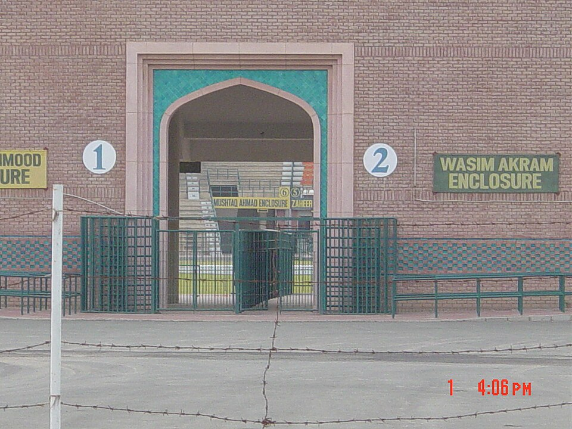
4: CC BY-SA 3.0#82 Rawalpindi Cricket Stadium · Rawalpindi (1 Tests)
 0: CC BY-SA 4.0
0: CC BY-SA 4.0#83 Warner Park · Basseterre (1 Tests)
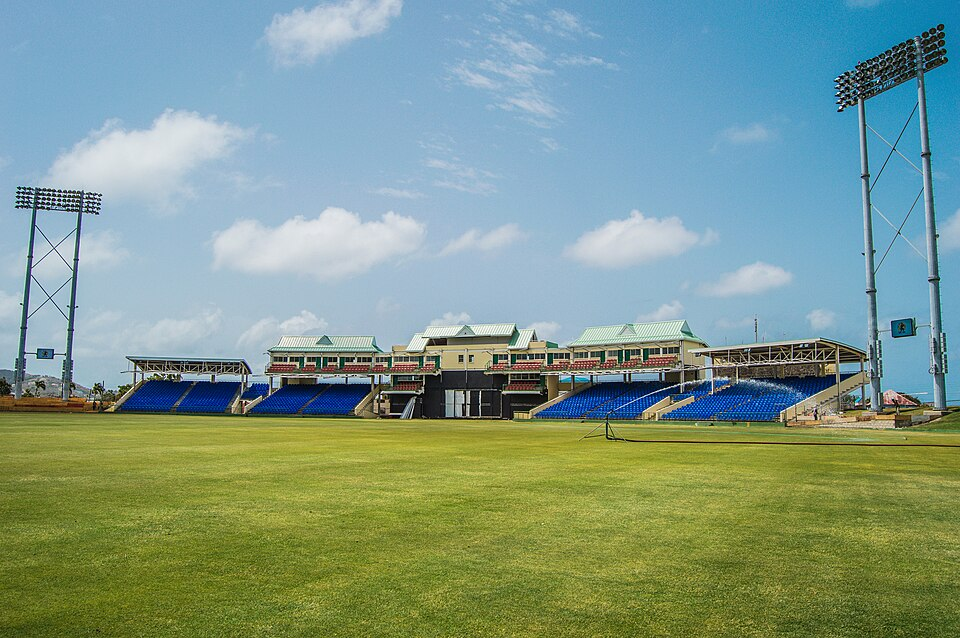
0: CC BY 2.0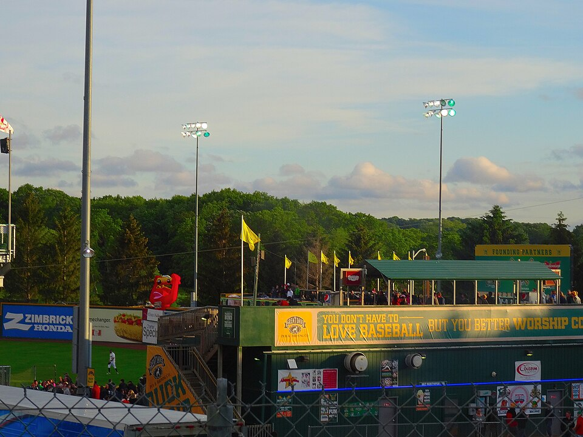
1: CC BY 3.0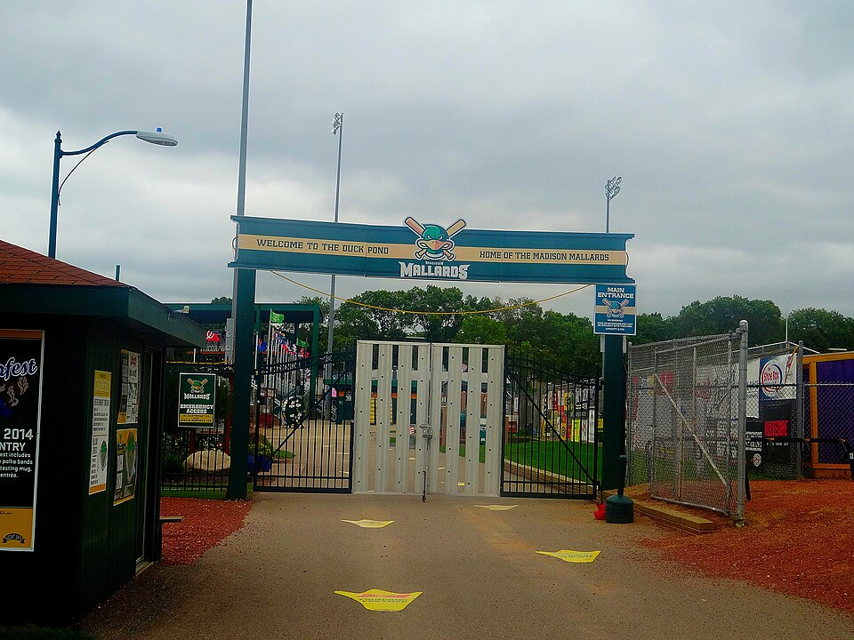
2: CC BY 3.0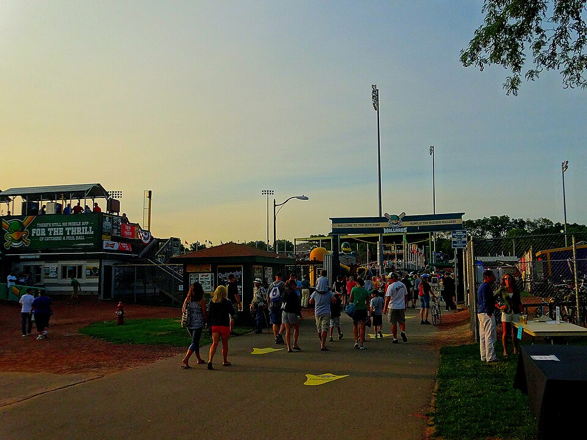
3: CC BY 3.0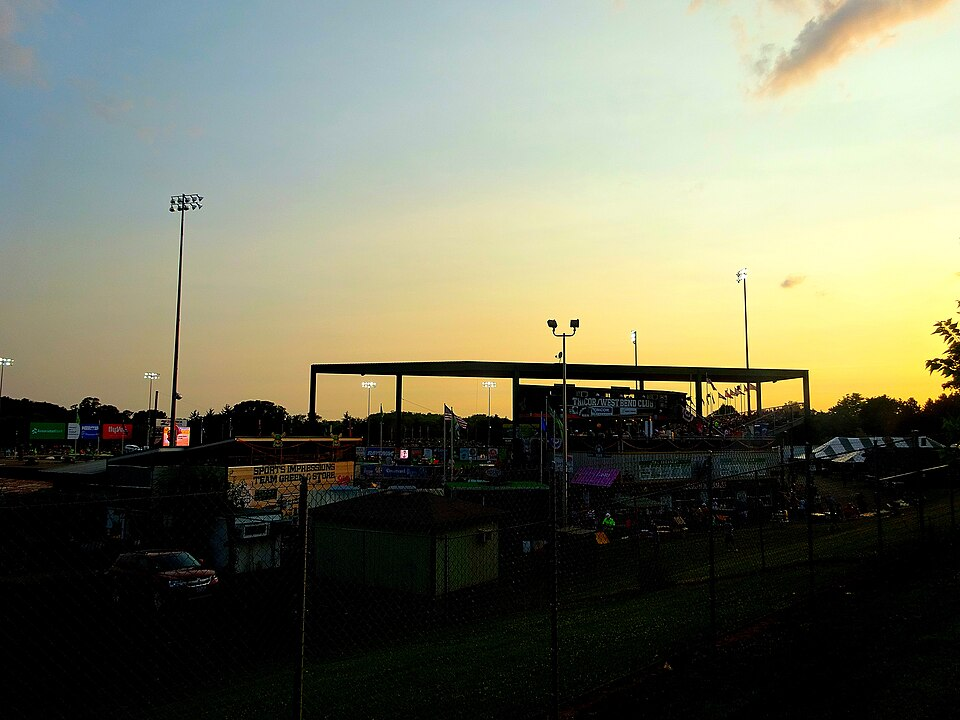
4: CC BY 3.0